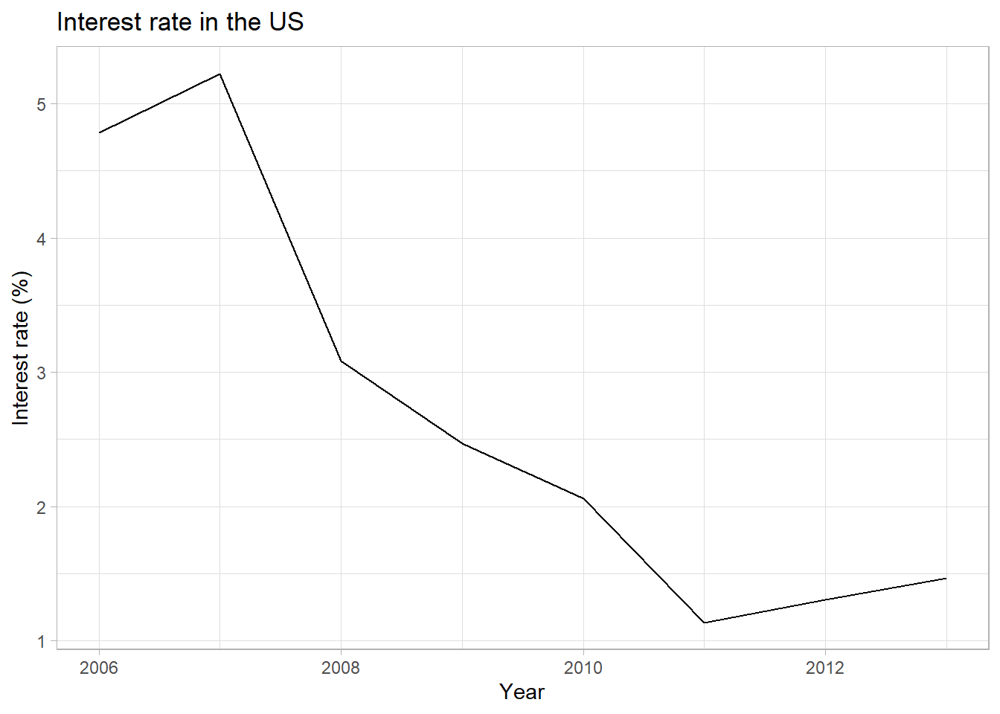
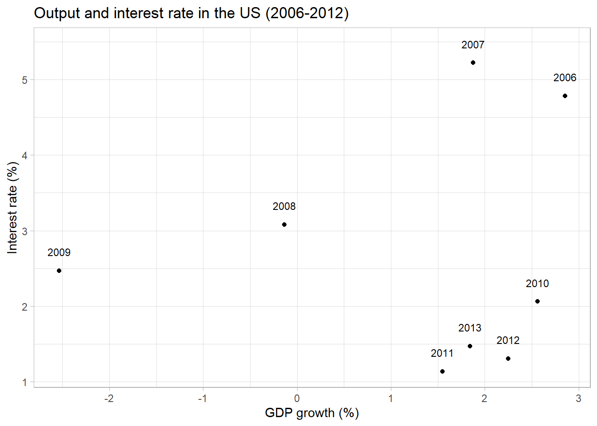
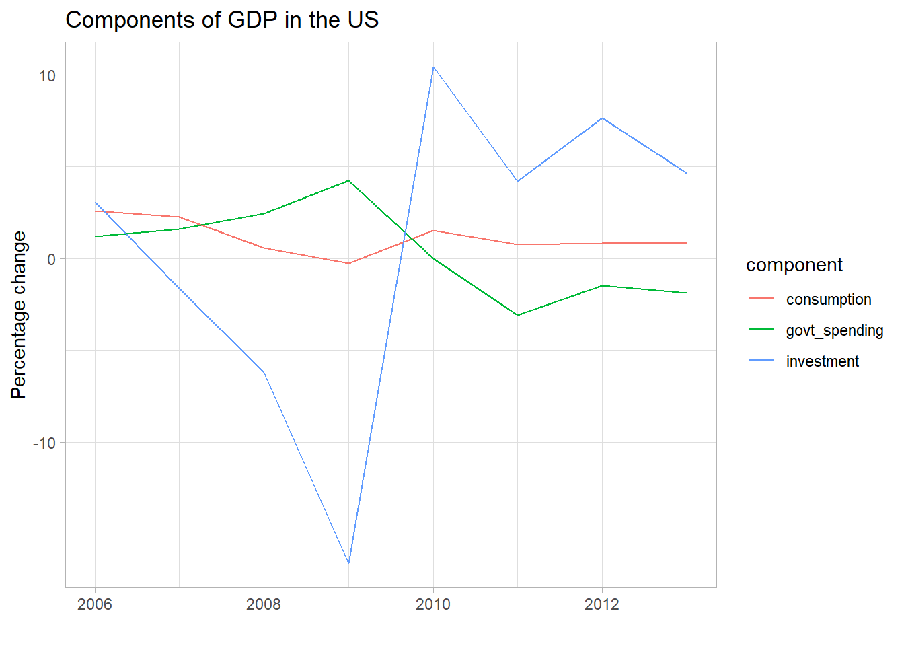

install.packages("tidyverse") # install the packageSSCECON207 workshop I:
Introduction to R and ggplot
Learning outcomes
In this tutorial you learn the steps needed to create basic figures in R. You can use these skills to create a poster where you analyze empirical evidence on a policy intervention in the context of the IS-LM model.
You learn how to import data into R, how to filter and select the data that you need, and how to make basic figures using the ggplot2 package.
First steps
This tutorial assumes that you have already installed R and RStudio, and have read sections 2, 3.1-3.4, and 4-6 of A (very) short introduction to R and sections 1-4 of How to make any plot in ggplot2?.
Creating a project in RStudio
It is convenient to create an R project for each assignment that you are working on. A project is basically a folder that stores all files related to the assignment.
You can create a project as follows:
- Open RStudio and click on “Project: (None)” in the top right corner.
- Open the dropdown window and click on “New Project….”
- In the popup window select “New Directory”, then “New Project.”
- Choose a sensible name for your project and enter it as the Directory Name. You can either use the default file path or change it by clicking “Browse…” next to “Create project as a subdirectory of:.”
- Finally, click on “Create project.”
After a project is created, there are two easy ways of accessing it. You can either use the same dropdown window in the top right corner of RStudio that you used to create the project, and click on the name of the project there, or you can find the project folder within your files and click on the file with the .Rproj extension.
Installing tidyverse
Next, you need to install and load the tidyverse package. tidyverse is a collection of packages that allow clean workflows in R. The ggplot2 package that you will use to create figures is one of these included packages.
You need to install the package only once, but you need to load it every time you open and use R. It is good practice to load the package on the top of each script.
library(tidyverse) # load the packageImporting and cleaning the data
Importing a CSV file
Next, you need to import your data, which is in the format of a CSV (comma-separated values) file. Normally you would download a file to your project folder and load it in R from there. In this case, the data is available on Github, so you can link to it directly using the link below, without having to download it first.
You can import a file using the read_csv() function and by assigning the file to an object.
data <- read_csv("https://github.com/ucrdatacenter/projects/raw/main/SSCECON207/2022h1/workshop%201/ISLM_data.csv") # import the data from GithubThe IS-LM dataset contains the real interest rate, CPI-based inflation rate, and growth rates in GDP, consumption, investment, government spending.
Filtering the data
For your project you will only need to use part of the data. To see what the data frame looks like, you can view it by clicking on the name of the object in the Environment tab in the top right corner of RStudio.
The file “available_data.csv” (view here) provides a list of the countries and time periods available in the dataset. You can use this file to select a policy intervention to study. For each country in the list, data is available in the period between the years in the “first” and “last” columns.
Once you decide which country and time period you would like to use in your project, you need to filter the data to remove the observations that you do not need. You can do that with the filter() function. For example, if you are looking for US data between 2006-2013, you can do that as follows:
data_US <- data %>%
filter(year >= 2006, year <= 2013, code == "USA")The pipe operator (%>%) means that the next function uses the previous result as an input: in this case, it takes the object data as the first argument of the filter() function.
The double equal sign in code == "USA" means that instead of assigning the string "USA" to a variable named code (which is what code = "USA" would do), you are testing whether the contents of the object code and the string "USA" are equal to each other. Similarly, the less-than-or-equal and more-than-or-equal signs test the relationship between the contents of the variable year and the specified year. If the result of the test is true, the function keeps the observation, and if the result is false, the observation is removed. You can filter for country using both the variable country, which has full country names, or using the variable code with country codes. The results of the two operations will be equivalent. Make sure to remember that R is case-sensitive, so e.g. a filter set as code == "usa" will not work.
Other data manipulation
In some cases it is easier to work with a data frame that only includes the variables that you need. You can select these variables using the select() function. You can either list the variables that you want to keep as the arguments of the function, or you can list the variables you want to remove, using a - sign in front of the variable name.
For example, you can filter your data to only include the year and the components of GDP:
data_US %>%
select(year, consumption, investment, govt_spending) # only keep these four variables# A tibble: 8 × 4
year consumption investment govt_spending
<dbl> <dbl> <dbl> <dbl>
1 2006 2.59 3.06 1.22
2 2007 2.28 -1.62 1.60
3 2008 0.576 -6.21 2.45
4 2009 -0.251 -16.6 4.26
5 2010 1.53 10.5 0.0111
6 2011 0.761 4.22 -3.07
7 2012 0.831 7.66 -1.46
8 2013 0.858 4.67 -1.89 If you want to plot these variables on a single figure, it helps to turn the data into long format.
Currently each row of the data corresponds to one year, and three columns show the values of three variables; the data is in wide format. In long format you would have three rows corresponding to one year, a single column of values, and a column specifying which component of GDP that value corresponds to.
You can convert between these two forms using the pivot_longer() and pivot_wider() functions. Below is an example of using pivot_longer(). If you need more help on the function arguments, the help-files of the function provide a good explanation. You can access these help-files by running ?pivot_longer() and ?pivot_wider().
data_US %>%
select(year, consumption, investment, govt_spending) %>%
pivot_longer(cols = -year, names_to = "component", values_to = "value") # convert to long format# A tibble: 24 × 3
year component value
<dbl> <chr> <dbl>
1 2006 consumption 2.59
2 2006 investment 3.06
3 2006 govt_spending 1.22
4 2007 consumption 2.28
5 2007 investment -1.62
6 2007 govt_spending 1.60
7 2008 consumption 0.576
8 2008 investment -6.21
9 2008 govt_spending 2.45
10 2009 consumption -0.251
# ℹ 14 more rowsThe code cols = -year means that you want to transform all columns of the data frame except for year to long format. This notation is equivalent to cols = c(consumption, investment, govt_spending), but in this case cols = -year is shorter and more convenient.
First ggplot figures
Figures made with ggplot are built from several layers. You always use the same basic code structure to create a wide range of figures:
- The
ggplot()function creates a blank canvas for you to work on. - Geoms add the visual elements, such as points, lines, bars, or other shapes.
- Other specifications can include changing axis settings, setting the theme, adding labels, etc.
- You connect all these different specifications to each other using
+signs.
The variables that you want to display on the graph must always be wrapped in an aes() function, which stands for aesthetics. This specification tells R to determine the value of the aesthetic (x and y axes, colors, groups, line types, etc.) based on the value of the variable. aes() can be specified both in the main ggplot() function (in which case it will apply to all geoms) or within a geom_...() function (then it only applies to that geom).
The following code creates a time-series plot of the interest rate in the US over time. Comments explain what each line of code does.
data_US %>% # feed the previously created data frame into the ggplot function call
ggplot() + # create the ggplot "blank canvas"
geom_line(aes(x = year, y = rate)) + # set the variables to be displayed on each axis
labs(title = "Interest rate in the US", # add a title to the plot
x = "Year", # set the x axis label
y = "Interest rate (%)") + # set the y axis label
theme_light() # change the color scheme and layout of the plot to a different theme
If you are happy with how a figure looks, you can save it using the ggsave() function. As the function argument you need to specify the file name that you want to use:
ggsave("interest_rate.jpg") # save the plotIf instead of a time series plot, you want to make a scatterplot, you would use geom_point() instead of geom_line(). Additionally, you can use geom_text() to display labels next to the points. In that case, you need to set an additional aesthetic: the label you want displayed. Other settings are also possible within each geom, such as size, color, transparency, etc.
data_US %>%
ggplot(aes(x = GDP, y = rate)) + # these aesthetics apply to all geoms
geom_point() + # make a scatterplot
geom_text(aes(label = year), nudge_y = 0.25, size = 3) + # add the years as labels next to each point; shift them slightly up using the nudge_y argument so they don't overlap
labs(title = "Output and interest rate in the US (2006-2012)",
x = "GDP growth (%)",
y = "Interest rate (%)") +
theme_light()
ggsave("scatterplot.jpg") You can also connect ggplot figures to data cleaning/manipulation processes using the %>% operator. The code below connects the data manipulation shown previously to a time-series plot of the components of GDP:
data_US %>%
select(year, consumption, investment, govt_spending) %>%
pivot_longer(cols = -year, names_to = "component", values_to = "value") %>%
ggplot() +
geom_line(aes(x = year, y = value, color = component)) +
labs(title = "Components of GDP in the US",
x = "", # an empty string means that no axis title will be added
y = "Percentage change") +
theme_light()
ggsave("GDP.jpg")Useful links
You can find additional materials, including useful data sources, and online materials for using R and ggplot on the Data Center website.